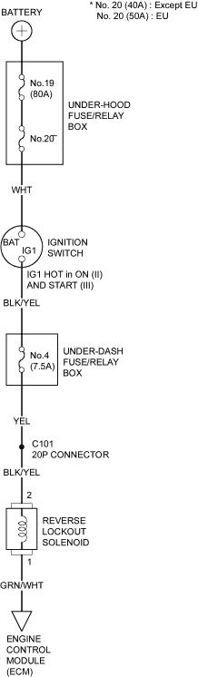

- Check the No. 4 (7.5A) fuse in the under-dash fuse/relay box.
Is the fuse OK?
YES - Go to step 2.
NO - Replace the fuse, and recheck. 
- Start the engine and check the Malfunction Indicator Lamp (MIL).
Does the MIL come on?
YES - Troubleshoot the DTC (see page 11-3), and recheck.
NO - Go to step 3.
- Turn the ignition switch OFF.
- Shift to reverse gear.
Can the transmission be shifted into reverse gear?
YES - Go to step 5.
NO - Repair the transmission and recheck.
- Turn the ignition switch ON (II). With the vehicle moving slowly (vehicle speed below 15 km/h (9 mph)), shift the transmission into reverse gear.
Can the transmission be shifted into reverse gear?
YES - Go to step 6.
NO - Go to step 7.
- Raise the front wheels and block the rear wheels, run the vehicle to a speed above 20 km/h (12 mph).
Can the transmission be shifted into reverse gear?
YES - Go to step 8.
NO -Intermittent failure, system is OK at this time.